Everything in JS happens inside the execution context. Imagine a sealed-off container inside which JS runs. It is an abstract concept that hold info about the env. within the current code is being executed. 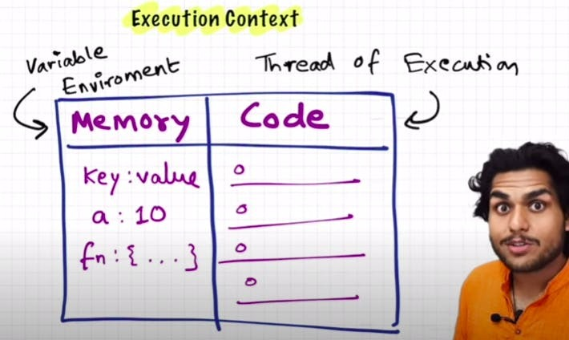
In the container the first component is memory component and the 2nd one is code component
Memory component has all the variables and functions in key value pairs. It is also called Variable environment.
Code component is the place where code is executed one line at a time. It is also called the Thread of Execution.
JS is a synchronous, single-threaded language
Watch Live On Youtube below:
When a JS program is ran, a global execution context is created.
The execution context is created in two phases.
Let's consider the below example and its code execution steps:
var n = 2;
function square(num) {
var ans = num * num;
return ans;
}
var square2 = square(n);
var square4 = square(4);The very first thing which JS does is memory creation phase, so it goes to line one of above code snippet, and allocates a memory space for variable 'n' and then goes to line two, and allocates a memory space for function 'square'. When allocating memory for n it stores 'undefined', a special value for 'n'. For 'square', it stores the whole code of the function inside its memory space. Then, as square2 and square4 are variables as well, it allocates memory and stores 'undefined' for them, and this is the end of first phase i.e. memory creation phase.
So O/P will look something like

Now, in 2nd phase i.e. code execution phase, it starts going through the whole code line by line. As it encounters var n = 2, it assigns 2 to 'n'. Until now, the value of 'n' was undefined. For function, there is nothing to execute. As these lines were already dealt with in memory creation phase.
Coming to line 6 i.e. var square2 = square(n), here functions are a bit different than any other language. A new execution context is created altogether. Again in this new execution context, in memory creation phase, we allocate memory to num and ans the two variables. And undefined is placed in them. Now, in code execution phase of this execution context, first 2 is assigned to num. Then var ans = num * num will store 4 in ans. After that, return ans returns the control of program back to where this function was invoked from.
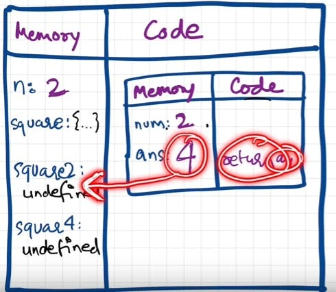
When return keyword is encountered, It returns the control to the called line and also the function execution context is deleted. Same thing will be repeated for square4 and then after that is finished, the global execution context will be destroyed. So the final diagram before deletion would look something like:

Javascript manages code execution context creation and deletion with the the help of Call Stack.
Call Stack is a mechanism to keep track of its place in script that calls multiple function.
Call Stack maintains the order of execution of execution contexts. It is also known as Program Stack, Control Stack, Runtime stack, Machine Stack, Execution context stack.
Watch Live On Youtube below:

getName(); // Namaste Javascript
console.log(x); // undefined
var x = 7;
function getName() {
console.log("Namaste Javascript");
}It should have been an outright error in many other languages, as it is not possible to even access something which is not even created (defined) yet But in JS, We know that in memory creation phase it assigns undefined and puts the content of function to function's memory. And in execution, it then executes whatever is asked. Here, as execution goes line by line and not after compiling, it could only print undefined and nothing else. This phenomenon, is not an error. However, if we remove var x = 7; then it gives error. Uncaught ReferenceError: x is not defined
Hoisting is a concept which enables us to extract values of variables and functions even before initialising/assigning value without getting error and this is happening due to the 1st phase (memory creation phase) of the Execution Context.
So in previous lecture, we learnt that execution context gets created in two phase, so even before code execution, memory is created so in case of variable, it will be initialized as undefined while in case of function the whole function code is placed in the memory. Example:
getName(); // Namaste JavaScript
console.log(x); // Uncaught Reference: x is not defined.
console.log(getName); // f getName(){ console.log("Namaste JavaScript); }
function getName() {
console.log("Namaste JavaScript");
}getName(); // Uncaught TypeError: getName is not a function
console.log(getName);
var getName = function () {
console.log("Namaste JavaScript");
};
// The code won't execute as the first line itself throws an TypeError.Watch Live On Youtube below:

var x = 1;
a();
b(); // we are calling the functions before defining them. This will work properly, as seen in Hoisting.
console.log(x);
function a() {
var x = 10; // local scope because of separate execution context
console.log(x);
}
function b() {
var x = 100;
console.log(x);
}Outputs:
10
100
1
Call Stack : GEC
In first phase of GEC (memory phase), variable x:undefined and a and b have their entire function code as value initialized
In second phase of GEC (execution phase), when the function is called, a new local Execution Context is created. After x = 1 assigned to GEC x, a() is called. So local EC for a is made inside code part of GEC.
Call Stack: [GEC, a()]
Call Stack: GEC
Call Stack :[GEC, b()] -> GEC (after printing yet another totally different x value as 100 in console log)
Finally GEC is deleted and also removed from call stack. Program ends.
reference:
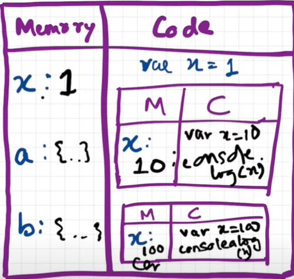
Watch Live On Youtube below:

The shortest JS program is empty file. Because even then, JS engine does a lot of things. As always, even in this case, it creates the GEC which has memory space and the execution context.
JS engine creates something known as 'window'. It is an object, which is created in the global space. It contains lots of functions and variables. These functions and variables can be accessed from anywhere in the program. JS engine also creates a this keyword, which points to the window object at the global level. So, in summary, along with GEC, a global object (window) and a this variable are created.
In different engines, the name of global object changes. Window in browsers, but in nodeJS it is called something else. At global level, this === window
If we create any variable in the global scope, then the variables get attached to the global object.
eg:
var x = 10;
console.log(x); // 10
console.log(this.x); // 10
console.log(window.x); // 10Watch Live On Youtube below:

In first phase (memory allocation) JS assigns each variable a placeholder called undefined.
undefined is when memory is allocated for the variable, but no value is assigned yet.
If an object/variable is not even declared/found in memory allocation phase, and tried to access it then it is Not defined
Not Defined !== Undefined
When variable is declared but not assigned value, its current value is undefined. But when the variable itself is not declared but called in code, then it is not defined.
console.log(x); // undefined
var x = 25;
console.log(x); // 25
console.log(a); // Uncaught ReferenceError: a is not definedWatch Live On Youtube below:

Scope in Javascript is directly related to Lexical Environment.
Let's observe the below examples:
// CASE 1
function a() {
console.log(b); // 10
// Instead of printing undefined it prints 10, So somehow this a function could access the variable b outside the function scope.
}
var b = 10;
a();// CASE 2
function a() {
c();
function c() {
console.log(b); // 10
}
}
var b = 10;
a();// CASE 3
function a() {
c();
function c() {
var b = 100;
console.log(b); // 100
}
}
var b = 10;
a();// CASE 4
function a() {
var b = 10;
c();
function c() {
console.log(b); // 10
}
}
a();
console.log(b); // Error, Not DefinedTo summarize the above points in terms of execution context:
call_stack = [GEC, a(), c()]
Now lets also assign the memory sections of each execution context in call_stack.
c() = [[lexical environment pointer pointing to a()]]
a() = [b:10, c:{}, [lexical environment pointer pointing to GEC]]
GEC = [a:{},[lexical_environment pointer pointing to null]]
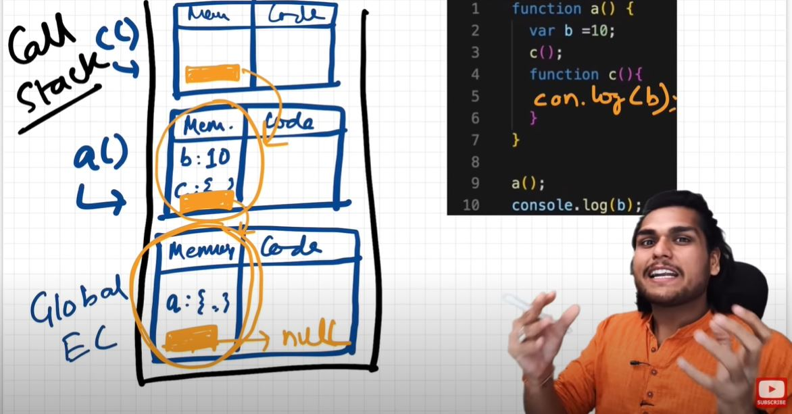

So, Lexical Environment = local memory + lexical env of its parent. Hence, Lexical Environement is the local memory along with the lexical environment of its parent
Lexical: In hierarchy, In order
Whenever an Execution Context is created, a Lexical environment(LE) is also created and is referenced in the local Execution Context(in memory space).
The process of going one by one to parent and checking for values is called scope chain or Lexcial environment chain.
function a() {
function c() {
// logic here
}
c(); // c is lexically inside a
} // a is lexically inside global execution
Lexical or Static scope refers to the accessibility of variables, functions and object based on physical location in source code.
Global {
Outer {
Inner
}
}
// Inner is surrounded by lexical scope of Outer
TLDR; An inner function can access variables which are in outer functions even if inner function is nested deep. In any other case, a function can't access variables not in its scope.
Watch Live On Youtube below:

console.log(a); // ReferenceError: Cannot access 'a' before initialization
console.log(b); // prints undefined as expected
let a = 10;
console.log(a); // 10
var b = 15;
console.log(window.a); // undefined
console.log(window.b); // 15It looks like let isn't hoisted, but it is, let's understand
Temporal Dead Zone : Time since when the let variable was hoisted until it is initialized some value.
Reference Error are thrown when variables are in temporal dead zone.
Syntax Error doesn't even let us run single line of code.
let a = 10;
let a = 100; //this code is rejected upfront as SyntaxError. (duplicate declaration)
------------------
let a = 10;
var a = 100; // this code also rejected upfront as SyntaxError. (can't use same name in same scope)let a;
a = 10;
console.log(a) // 10. Note declaration and assigning of a is in different lines.
------------------
const b;
b = 10;
console.log(b); // SyntaxError: Missing initializer in const declaration. (This type of declaration won't work with const. const b = 10 only will work)
------------------
const b = 100;
b = 1000; //this gives us TypeError: Assignment to constant variable.Types of Error: Syntax, Reference, and Type.
Uncaught ReferenceError: x is not defined at ...
Uncaught ReferenceError: cannot access 'a' before initialization
Uncaught SyntaxError: Identifier 'a' has already been declared
Uncaught SyntaxError: Missing initializer in const declaration
Uncaught TypeError: Assignment to constant variable
Watch Live On Youtube below:

What is a Block?
{
var a = 10;
let b = 20;
const c = 30;
// Here let and const are hoisted in Block scope,
// While, var is hoisted in Global scope.
}{
var a = 10;
let b = 20;
const c = 30;
}
console.log(a); // 10
console.log(b); // Uncaught ReferenceError: b is not defined* Reason?
* In the BLOCK SCOPE; we get b and c inside it initialized as *undefined* as a part of hoisting (in a seperate memory space called **block**)
* While, a is stored inside a GLOBAL scope.
* Thus we say, *let* and *const* are BLOCK SCOPED. They are stored in a separate mem space which is reserved for this block. Also, they can't be accessed outside this block. But var a can be accessed anywhere as it is in global scope. Thus, we can't access them outside the Block.What is Shadowing?
var a = 100;
{
var a = 10; // same name as global var
let b = 20;
const c = 30;
console.log(a); // 10
console.log(b); // 20
console.log(c); // 30
}
console.log(a); // 10, instead of the 100 we were expecting. So block "a" modified val of global "a" as well. In console, only b and c are in block space. a initially is in global space(a = 100), and when a = 10 line is run, a is not created in block space, but replaces 100 with 10 in global space itself.So, If one has same named variable outside the block, the variable inside the block shadows the outside variable. This happens only for var
Let's observe the behaviour in case of let and const and understand it's reason.
let b = 100;
{
var a = 10;
let b = 20;
const c = 30;
console.log(b); // 20
}
console.log(b); // 100, Both b's are in separate spaces (one in Block(20) and one in Script(another arbitrary mem space)(100)). Same is also true for *const* declarations.
const c = 100;
function x() {
const c = 10;
console.log(c); // 10
}
x();
console.log(c); // 100What is Illegal Shadowing?
let a = 20;
{
var a = 20;
}
// Uncaught SyntaxError: Identifier 'a' has already been declaredlet a = 20;
function x() {
var a = 20;
}Watch Live On Youtube below:

Function bundled along with it's lexical scope is closure.
JavaScript has a lexcial scope environment. If a function needs to access a variable, it first goes to its local memory. When it does not find it there, it goes to the memory of its lexical parent. See Below code, Over here function y along with its lexical scope i.e. (function x) would be called a closure.
function x() {
var a = 7;
function y() {
console.log(a);
}
return y;
}
var z = x();
console.log(z); // value of z is entire code of function y.
In above code, When y is returned, not only is the function returned but the entire closure (fun y + its lexical scope) is returned and put inside z. So when z is used somewhere else in program, it still remembers var a inside x()
Another Example
function z() {
var b = 900;
function x() {
var a = 7;
function y() {
console.log(a, b);
}
y();
}
x();
}
z(); // 7 900
Thus In simple words, we can say:

Advantages of Closure:
Disadvantages of Closure:
Watch Live On Youtube below:

Time, tide and Javascript wait for none.
function x() {
var i = 1;
setTimeout(function () {
console.log(i);
}, 3000);
console.log("Namaste Javascript");
}
x();
// Output:
// Namaste Javascript
// 1 // after waiting 3 secondsWe expect JS to wait 3 sec, print 1 and then go down and print the string. But JS prints string immediately, waits 3 sec and then prints 1.
The function inside setTimeout forms a closure (remembers reference to i). So wherever function goes it carries this ref along with it.
setTimeout takes this callback function & attaches timer of 3000ms and stores it. Goes to next line without waiting and prints string.
After 3000ms runs out, JS takes function, puts it into call stack and runs it.
Q: Print 1 after 1 sec, 2 after 2 sec till 5 : Tricky interview question
We assume this has a simple approach as below
function x() {
for (var i = 1; i <= 5; i++) {
setTimeout(function () {
console.log(i);
}, i * 1000);
}
console.log("Namaste Javascript");
}
x();
// Output:
// Namaste Javascript
// 6
// 6
// 6
// 6
// 6
Reason?
This happens because of closures. When setTimeout stores the function somewhere and attaches timer to it, the function remembers its reference to i, not value of i. All 5 copies of function point to same reference of i. JS stores these 5 functions, prints string and then comes back to the functions. By then the timer has run fully. And due to looping, the i value became 6. And when the callback fun runs the variable i = 6. So same 6 is printed in each log
To avoid this, we can use let instead of var as let has Block scope. For each iteration, the i is a new variable altogether(new copy of i). Everytime setTimeout is run, the inside function forms closure with new variable i
But what if interviewer ask us to implement using var?
function x() {
for (var i = 1; i <= 5; i++) {
function close(i) {
setTimeout(function () {
console.log(i);
}, i * 1000);
// put the setT function inside new function close()
}
close(i); // everytime you call close(i) it creates new copy of i. Only this time, it is with var itself!
}
console.log("Namaste Javascript");
}
x();
Watch Live On Youtube below:

Ans: A function along with reference to its outer environment together forms a closure. Or in other words, A Closure is a combination of a function and its lexical scope bundled together. eg:
function outer() {
var a = 10;
function inner() {
console.log(a);
} // inner forms a closure with outer
return inner;
}
outer()(); // 10 // over here first `()` will return inner function and then using secong `()` to call inner functionfunction outer() {
function inner() {
console.log(a);
}
var a = 10;
return inner;
}
outer()(); // 10Ans: Yes, because inner function forms a closure with its outer environment so sequence doesn't matter.
function outer() {
let a = 10;
function inner() {
console.log(a);
}
return inner;
}
outer()(); // 10Ans: It will still behave the same way.
function outer(str) {
let a = 10;
function inner() {
console.log(a, str);
}
return inner;
}
outer("Hello There")(); // 10 "Hello There"Ans: Inner function will now form closure and will have access to both a and str.
function outest() {
var c = 20;
function outer(str) {
let a = 10;
function inner() {
console.log(a, c, str);
}
return inner;
}
return outer;
}
outest()("Hello There")(); // 10 20 "Hello There"Ans: Yes, inner will have access to all its outer environment.
function outest() {
var c = 20;
function outer(str) {
let a = 10;
function inner() {
console.log(a, c, str);
}
return inner;
}
return outer;
}
let a = 100;
outest()("Hello There")(); // 10 20 "Hello There"Ans: Still the same output, the inner function will have reference to inner a, so conflicting name won't matter here. If it wouldn't have find a inside outer function then it would have went more outer to find a and thus have printed 100. So, it try to resolve variable in scope chain and if a wouldn't have been found it would have given reference error.
// without closures
var count = 0;
function increment(){
count++;
}
// in the above code, anyone can access count and change it.
------------------------------------------------------------------
// (with closures) -> put everything into a function
function counter() {
var count = 0;
function increment(){
count++;
}
}
console.log(count); // this will give referenceError as count can't be accessed. So now we are able to achieve hiding of data
------------------------------------------------------------------
//(increment with function using closure) true function
function counter() {
var count = 0;
return function increment(){
count++;
console.log(count);
}
}
var counter1 = counter(); //counter function has closure with count var.
counter1(); // increments counter
var counter2 = counter();
counter2(); // here counter2 is whole new copy of counter function and it wont impack the output of counter1
*************************
// Above code is not good and scalable for say, when you plan to implement decrement counter at a later stage.
// To address this issue, we use *constructors*
// Adding decrement counter and refactoring code:
function Counter() {
//constructor function. Good coding would be to capitalize first letter of constructor function.
var count = 0;
this.incrementCounter = function() { //anonymous function
count++;
console.log(count);
}
this.decrementCounter = function() {
count--;
console.log(count);
}
}
var counter1 = new Counter(); // new keyword for constructor fun
counter1.incrementCounter();
counter1.incrementCounter();
counter1.decrementCounter();
// returns 1 2 1Ans: Overconsumption of memory when using closure as everytime as those closed over variables are not garbage collected till program expires. So when creating many closures, more memory is accumulated and this can create memory leaks if not handled.
Garbage collector : Program in JS engine or browser that frees up unused memory. In highlevel languages like C++ or JAVA, garbage collection is left to the programmer, but in JS engine its done implicitly.
function a() {
var x = 0;
return function b() {
console.log(x);
};
}
var y = a(); // y is a copy of b()
y();
// Once a() is called, its element x should be garbage collected ideally. But fun b has closure over var x. So mem of x cannot be freed. Like this if more closures formed, it becomes an issue. To tacke this, JS engines like v8 and Chrome have smart garbage collection mechanisms. Say we have var x = 0, z = 10 in above code. When console log happens, x is printed as 0 but z is removed automatically.Watch Live On Youtube below:

Functions are heart ♥ of Javascript.
Below way of creating function are function statement.
function a() {
console.log("Hello");
}
a(); // HelloAssigning a function to a variable. Function acts like a value.
var b = function () {
console.log("Hello");
};
b();The major difference between these two lies in Hoisting.
a(); // "Hello A"
b(); // TypeError
function a() {
console.log("Hello A");
}
var b = function () {
console.log("Hello B");
};
// Why? During mem creation phase a is created in memory and function assigned to a. But b is created like a variable (b:undefined) and until code reaches the function() part, it is still undefined. So it cannot be called.Other name for function statement.
A function without a name.
function () {
}// this is going to throw Syntax Error - Function Statement requires function name.Same as Function Expression but function has a name instead of being anonymous.
var b = function xyz() {
console.log("b called");
};
b(); // "b called"
xyz(); // Throws ReferenceError:xyz is not defined.
// xyz function is not created in global scope. So it can't be called.var b = function (param1, param2) {
// labels/identifiers are parameters
console.log("b called");
};
b(arg1, arg2); // arguments - values passed inside function callWe can pass functions inside a function as arguments and /or return a function(HOF). These ability are altogether known as First class function. It is programming concept available in some other languages too.
var b = function (param1) {
console.log(param1); // prints " f() {} "
};
b(function () {});
// Other way of doing the same thing:
var b = function (param1) {
console.log(param1);
};
function xyz() {}
b(xyz); // same thing as prev code
// we can return a function from a function:
var b = function (param1) {
return function () {};
};
console.log(b()); //we log the entire fun within b.Watch Live On Youtube below:

setTimeout(function () {
console.log("Timer");
}, 1000); // first argument is callback function and second is timer.setTimeout(function () {
console.log("timer");
}, 5000);
function x(y) {
console.log("x");
y();
}
x(function y() {
console.log("y");
});
// x y timer// Another Example of callback
function printStr(str, cb) {
setTimeout(() => {
console.log(str);
cb();
}, Math.floor(Math.random() * 100) + 1);
}
function printAll() {
printStr("A", () => {
printStr("B", () => {
printStr("C", () => {});
});
});
}
printAll(); // A B C // in order// index.html
<button id="clickMe">Click Me!</button>;
// in index.js
document.getElementById("clickMe").addEventListener("click", function xyz() {
//when event click occurs, this callback function (xyz) is called into callstack
console.log("Button clicked");
});let count = 0;
document
.getElementById("clickMe")
.addEventListener("click", function xyz() {
console.log("Button clicked", ++count);
});
function attachEventList() {
//creating new function for closure
let count = 0;
document
.getElementById("clickMe")
.addEventListener("click", function xyz() {
console.log("Button clicked", ++count); //now callback function forms closure with outer scope(count)
});
}
attachEventList();
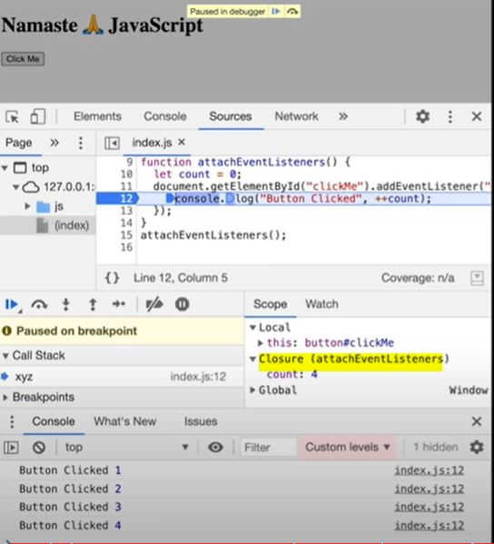Watch Live On Youtube below:

Note: Call stack will execeute any execeution context which enters it. Time, tide and JS waits for none. TLDR; Call stack has no timer.
None of the below are part of Javascript! These are extra superpowers that browser has. Browser gives access to JS callstack to use these powers. 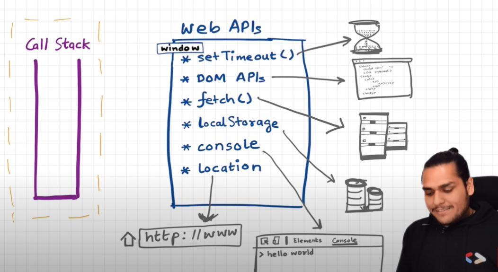
setTimeout(), DOM APIs, fetch(), localstorage, console (yes, even console.log is not JS!!), location and so many more.
We get all these inside call stack through global object ie. window
Let's undertand the below code image and its explaination: 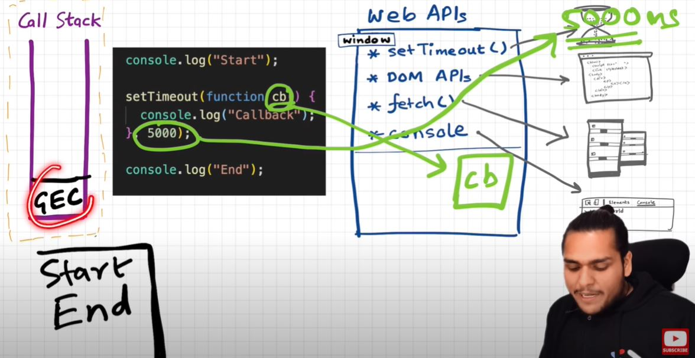
console.log("start");
setTimeout(function cb() {
console.log("timer");
}, 5000);
console.log("end");
// start end timer
Q: How after 5 secs timer is console?
Q: Another example to understand Eventloop & Callback Queue.
See the below Image and code and try to understand the reason: 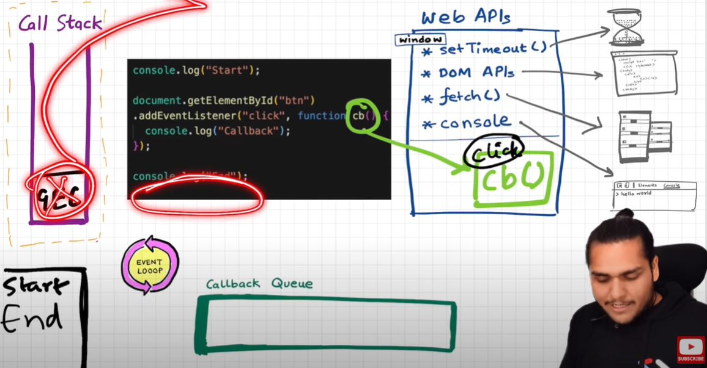 Explaination?
console.log("Start");
document.getElementById("btn").addEventListener("click", function cb() {
// cb() registered inside webapi environment and event(click) attached to it. i.e. REGISTERING CALLBACK AND ATTACHING EVENT TO IT.
console.log("Callback");
});
console.log("End"); // calls console api and logs in console window. After this GEC get removed from call stack.
// In above code, even after console prints "Start" and "End" and pops GEC out, the eventListener stays in webapi env(with hope that user may click it some day) until explicitly removed, or the browser is closed.
Eventloop has just one job to keep checking callback queue and if found something push it to call stack and delete from callback queue.
Q: Need of callback queue?
Ans: Suppose user clciks button x6 times. So 6 cb() are put inside callback queue. Event loop sees if call stack is empty/has space and whether callback queue is not empty(6 elements here). Elements of callback queue popped off, put in callstack, executed and then popped off from call stack.
Let's observe the code below and try to understand
console.log("Start"); // this calls the console web api (through window) which in turn actually modifies values in console.
setTimeout(function cbT() {
console.log("CB Timeout");
}, 5000);
fetch("https://api.netflix.com").then(function cbF() {
console.log("CB Netflix");
}); // take 2 seconds to bring response
// millions lines of code
console.log("End");
Code Explaination:
* Same steps for everything before fetch() in above code.
* fetch registers cbF into webapi environment along with existing cbT.
* cbT is waiting for 5000ms to end so that it can be put inside callback queue. cbF is waiting for data to be returned from Netflix servers gonna take 2 seconds.
* After this millions of lines of code is running, by the time millions line of code will execute, 5 seconds has finished and now the timer has expired and response from Netflix server is ready.
* Data back from cbF ready to be executed gets stored into something called a Microtask Queue.
* Also after expiration of timer, cbT is ready to execute in Callback Queue.
* Microtask Queue is exactly same as Callback Queue, but it has higher priority. Functions in Microtask Queue are executed earlier than Callback Queue.
* In console, first Start and End are printed in console. First cbF goes in callstack and "CB Netflix" is printed. cbF popped from callstack. Next cbT is removed from callback Queue, put in Call Stack, "CB Timeout" is printed, and cbT removed from callstack.
* See below Image for more understanding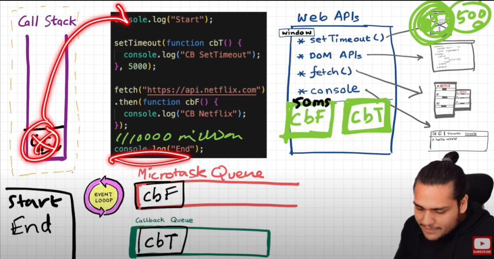 Microtask Priority Visualization 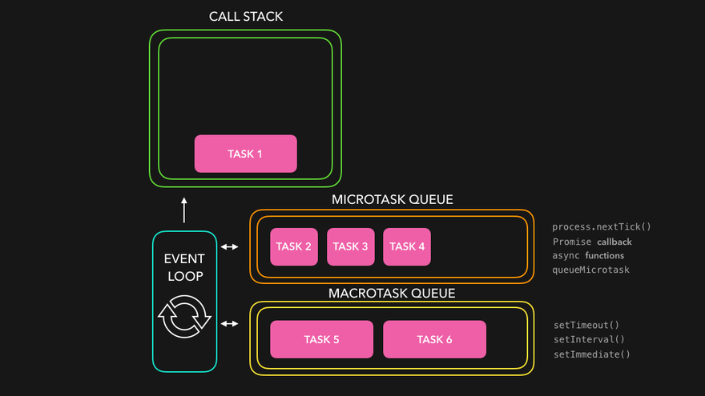
When does the event loop actually start ? - Event loop, as the name suggests, is a single-thread, loop that is almost infinite. It's always running and doing its job.
Are only asynchronous web api callbacks are registered in web api environment? - YES, the synchronous callback functions like what we pass inside map, filter and reduce aren't registered in the Web API environment. It's just those async callback functions which go through all this.
Does the web API environment stores only the callback function and pushes the same callback to queue/microtask queue? - Yes, the callback functions are stored, and a reference is scheduled in the queues. Moreover, in the case of event listeners(for example click handlers), the original callbacks stay in the web API environment forever, that's why it's adviced to explicitly remove the listeners when not in use so that the garbage collector does its job.
How does it matter if we delay for setTimeout would be 0ms. Then callback will move to queue without any wait ? - No, there are trust issues with setTimeout() 😅. The callback function needs to wait until the Call Stack is empty. So the 0 ms callback might have to wait for 100ms also if the stack is busy.
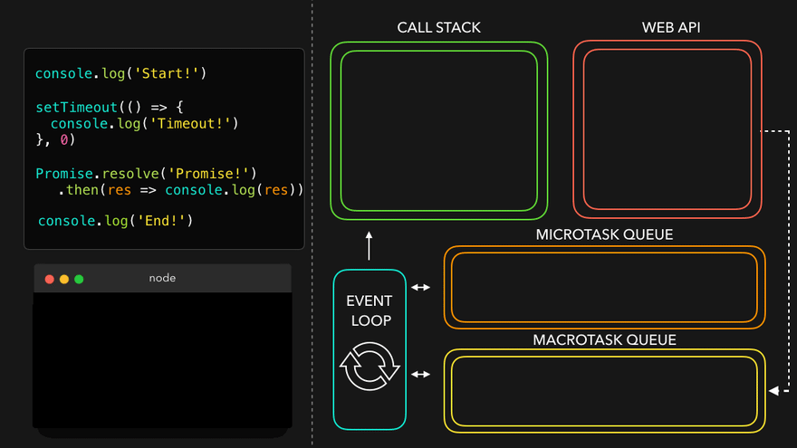
 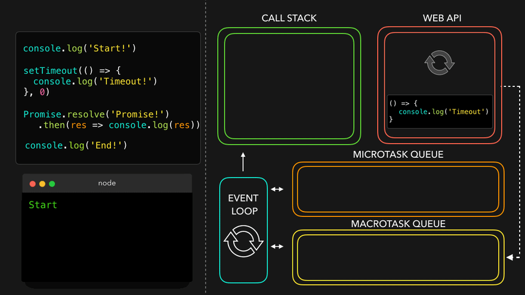
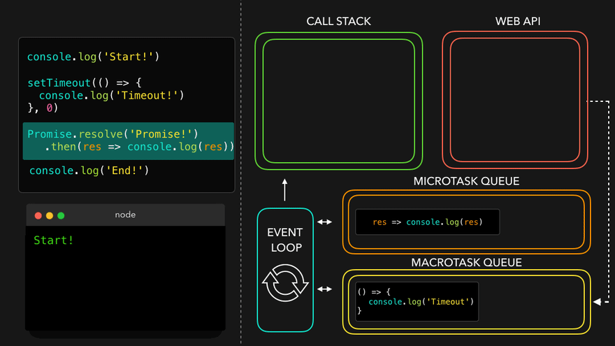
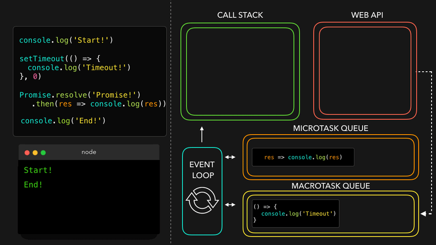
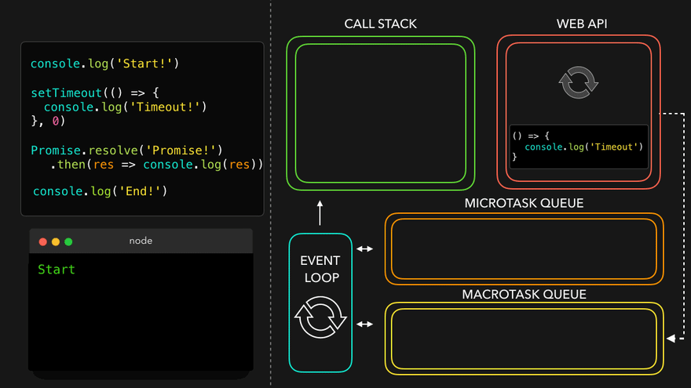
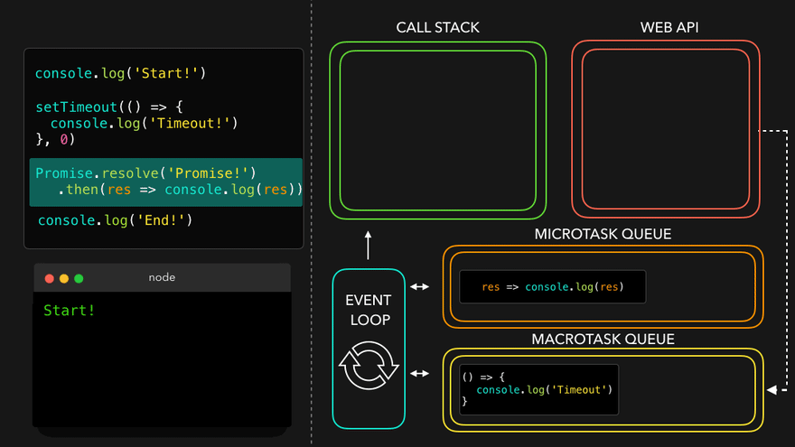
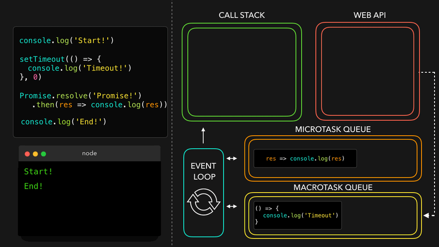

Watch Live On Youtube below:

JS runs literally everywhere from smart watch to robots to browsers because of Javascript Runtime Environment (JRE).
JRE is like a big container which has everything which are required to run Javascript code.
JRE consists of a JS Engine (❤️ of JRE), set of APIs to connect with outside environment, event loop, Callback queue, Microtask queue etc.
Browser can execute javascript code because it has the Javascript Runtime Environment.
ECMAScript is a governing body of JS. It has set of rules which are followed by all JS engines like Chakra(Edge), Spidermonkey(Firefox)(first javascript engine created by JS creator himself), v8(Chrome)
Javascript Engine is not a machine. Its software written in low level languages (eg. C++) that takes in hi-level code in JS and spits out low level machine code.
Code inside Javascript Engine passes through 3 steps : Parsing, Compilation and Execution
Companies use different JS engines and each try to make theirs the best.
Watch Live On Youtube below:

setTimeout with timer of 5 secs sometimes does not exactly guarantees that the callback function will execute exactly after 5s.
Let's observe the below code and it's explaination
console.log("Start");
setTimeout(function cb() {
console.log("Callback");
}, 5000);
console.log("End");
// Millions of lines of code to execute
// o/p: Over here setTimeout exactly doesn't guarantee that the callback function will be called exactly after 5s. Maybe 6,7 or even 10! It all depends on callstack. Why?
Reason?
The First rule of JavaScript: Do not block the main thread (as JS is a single threaded(only 1 callstack) language).
In below example, we are blocking the main thread. Observe Questiona and Output. 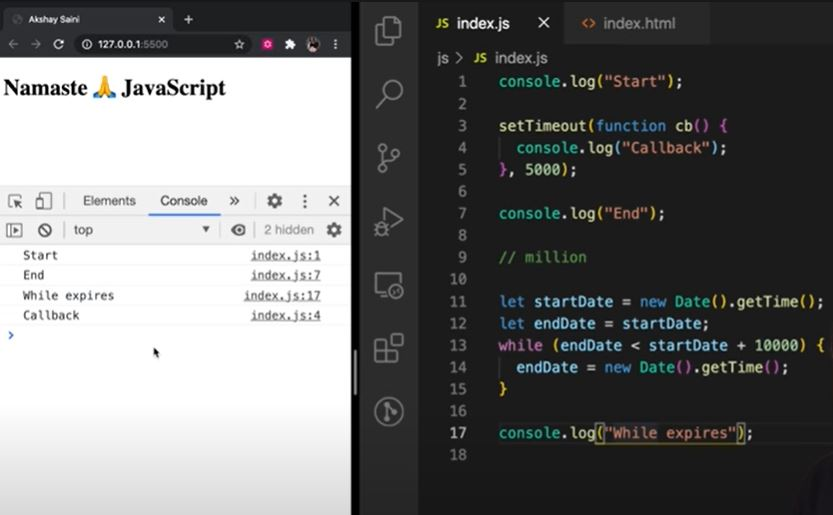
setTimeout guarantees that it will take at least the given timer to execute the code.
JS is a synchronous single threaded language. With just 1 thread it runs all pieces of code. It becomes kind of an interpreter language, and runs code very fast inside browser (no need to wait for code to be compiled) (JIT - Just in time compilation). And there are still ways to do async operations as well.
What if timeout = 0sec?
console.log("Start");
setTimeout(function cb() {
console.log("Callback");
}, 0);
console.log("End");
// Even though timer = 0s, the cb() has to go through the queue. Registers calback in webapi's env , moves to callback queue, and execute once callstack is empty.
// O/p - Start End Callback
// This method of putting timer = 0, can be used to defer a less imp function by a little so the more important function(here printing "End") can take place
Watch Live On Youtube below:

Ans: A Higher-order functions are regular functions that take other functions as arguments or return functions as their results. Eg:
function x() {
console.log("Hi)";
};
function y(x) {
x();
};
y(); // Hi
// y is a higher order function
// x is a callback functionLet's try to understand how we should approach solution in interview. I have an array of radius and I have to calculate area using these radius and store in an array.
First Approach:
const radius = [1, 2, 3, 4];
const calculateArea = function (radius) {
const output = [];
for (let i = 0; i < radius.length; i++) {
output.push(Math.PI * radius[i] * radius[i]);
}
return output;
};
console.log(calculateArea(radius));The above solution works perfectly fine but what if we have now requirement to calculate array of circumference. Code now be like
const radius = [1, 2, 3, 4];
const calculateCircumference = function (radius) {
const output = [];
for (let i = 0; i < radius.length; i++) {
output.push(2 * Math.PI * radius[i]);
}
return output;
};
console.log(calculateCircumference(radius));But over here we are violating some principle like DRY Principle, now lets observe the better approach.
const radiusArr = [1, 2, 3, 4];
// logic to calculate area
const area = function (radius) {
return Math.PI * radius * radius;
}
// logic to calculate circumference
const circumference = function (radius) {
return 2 * Math.PI * radius;
}
const calculate = function(radiusArr, operation) {
const output = [];
for (let i = 0; i < radiusArr.length; i++) {
output.push(operation(radiusArr[i]));
}
return output;
}
console.log(calculate(radiusArr, area));
console.log(calculate(radiusArr, circumference));
// Over here calculate is HOF
// Over here we have extracted logic into separate functions. This is the beauty of functional programming.
Polyfill of map
// Over here calculate is nothing but polyfill of map function
// console.log(radiusArr.map(area)) == console.log(calculate(radiusArr, area));
***************************************************
Lets convert above calculate function as map function and try to use. So,
Array.prototype.calculate = function(operation) {
const output = [];
for (let i = 0; i < this.length; i++) {
output.push(operation(this[i]));
}
return output;
}
console.log(radiusArr.calculate(area))Watch Live On Youtube below:

map, filter & reducer are Higher Order Functions.
It is basically used to transform a array. The map() method creates a new array with the results of calling a function for every array element.
const output = arr.map(function) // this function tells map that what transformation I want on each element of array
const arr = [5, 1, 3, 2, 6];
// Task 1: Double the array element: [10, 2, 6, 4, 12]
function double(x) {
return x * 2;
}
const doubleArr = arr.map(double); // Internally map will run double function for each element of array and create a new array and returns it.
console.log(doubleArr); // [10, 2, 6, 4, 12]// Task 2: Triple the array element
const arr = [5, 1, 3, 2, 6];
// Transformation logic
function triple(x) {
return x * 3;
}
const tripleArr = arr.map(triple);
console.log(tripleArr); // [15, 3, 9, 6, 18]// Task 3: Convert array elements to binary
const arr = [5, 1, 3, 2, 6];
// Transformation logic:
function binary(x) {
return x.toString(2);
}
const binaryArr = arr.map(binary);
// The above code can be rewritten as :
const binaryArr = arr.map(function binary(x) {
return x.toString(2);
}
// OR -> Arrow function
const binaryArr = arr.map((x) => x.toString(2));So basically map function is mapping each and every value and transforming it based on given condition.
Filter function is basically used to filter the value inside an array. The arr.filter() method is used to create a new array from a given array consisting of only those elements from the given array which satisfy a condition set by the argument method.
const array = [5, 1, 3, 2, 6];
// filter odd values
function isOdd(x) {
return x % 2;
}
const oddArr = array.filter(isOdd); // [5,1,3]
// Other way of writing the above:
const oddArr = arr.filter((x) => x % 2);Filter function creates an array and store only those values which evaluates to true.
It is a function which take all the values of array and gives a single output of it. It reduces the array to give a single output.
const array = [5, 1, 3, 2, 6];
// Calculate sum of elements of array - Non functional programming way
function findSum(arr) {
let sum = 0;
for (let i = 0; i < arr.length; i++) {
sum = sum + arr[i];
}
return sum;
}
console.log(findSum(array)); // 17
// reduce function way
const sumOfElem = arr.reduce(function (accumulator, current) {
// current represent the value of array
// accumulator is used the result from element of array.
// In comparison to previous code snippet, *sum* variable is *accumulator* and *arr[i]* is *current*
accumulator = accumulator + current;
return accumulator;
}, 0); //In above example sum was initialized with 0, so over here accumulator also needs to be initialized, so the second argument to reduce function represent the initialization value.
console.log(sumOfElem); // 17// find max inside array: Non functional programming way:
const array = [5, 1, 3, 2, 6];
function findMax(arr) {
let max = 0;
for(let i = 0; i < arr.length; i++ {
if (arr[i] > max) {
max = arr[i]
}
}
return max;
}
console.log(findMax(array)); // 6
// using reduce
const output = arr.reduce((acc, current) => {
if (current > acc ) {
acc = current;
}
return acc;
}, 0);
console.log(output); // 6
// acc is just a label which represent the accumulated value till now,
// so we can also label it as max in this case
const output = arr.reduce((max, current) => {
if (current > max) {
max= current;
}
return max;
}, 0);
console.log(output); // 6const users = [
{ firstName: "Alok", lastName: "Raj", age: 23 },
{ firstName: "Ashish", lastName: "Kumar", age: 29 },
{ firstName: "Ankit", lastName: "Roy", age: 29 },
{ firstName: "Pranav", lastName: "Mukherjee", age: 50 },
];
// Get array of full name : ["Alok Raj", "Ashish Kumar", ...]
const fullNameArr = users.map((user) => user.firstName + " " + user.lastName);
console.log(fullNameArr); // ["Alok Raj", "Ashish Kumar", ...]
----------------------------------------------------------
// Get the count/report of how many unique people with unique age are there
// like: {29 : 2, 75 : 1, 50 : 1}
// We should use reduce, why? we want to deduce some information from the array. Basically we want to get a single object as output
const report = users.reduce((acc, curr) => {
if(acc[curr.age]) {
acc[curr.age] = ++ acc[curr.age] ;
} else {
acc[curr.age] = 1;
}
return acc; //to every time return update object
}, {})
console.log(report) // {29 : 2, 75 : 1, 50 : 1}// First name of all people whose age is less than 30
const users = [
{ firstName: "Alok", lastName: "Raj", age: 23 },
{ firstName: "Ashish", lastName: "Kumar", age: 29 },
{ firstName: "Ankit", lastName: "Roy", age: 29 },
{ firstName: "Pranav", lastName: "Mukherjee", age: 50 },
];
// function chaining
const output = users
.filter((user) => user.age < 30)
.map((user) => user.firstName);
console.log(output); // ["Alok", "Ashish", "Ankit"]
// Homework challenge: Implement the same logic using reduce
const output = users.reduce((acc, curr) => {
if (curr.age < 30) {
acc.push(curr.firstName);
}
return acc;
}, []);
console.log(output); // ["Alok", "Ashish", "Ankit"]Watch Live On Youtube below:

There are 2 Parts of Callback:
Understanding of Bad part of callback is super important to learn Promise in next lecture.
💡 JavaScript is synchronous, single threaded language. It can Just do one thing at a time, it has just one call-stack and it can execute one thing at a time. Whatever code we give to Javascript will be quickly executed by Javascript engine, it does not wait.
console.log("Namaste");
console.log("JavaScript");
console.log("Season 2");
// Namaste
// JavaScript
// Season 2
// 💡 It is quickly printing because `Time, tide & Javascript waits for none.`But what if we have to delay execution of any line, we could utilize callback, How?
console.log("Namaste");
setTimeout(function () {
console.log("JavaScript");
}, 5000);
console.log("Season 2");
// Namaste
// Season 2
// JavaScript
// 💡 Here we are delaying the execution using callback approach of setTimeout.Assume a scenario of e-Commerce web, where one user is placing order, he has added items like, shoes, pants and kurta in cart and now he is placing order. So in backend the situation could look something like this.
const cart = ["shoes", "pants", "kurta"];
// Two steps to place a order
// 1. Create a Order
// 2. Proceed to Payment
// It could look something like this:
api.createOrder();
api.proceedToPayment();Assumption, once order is created then only we can proceed to payment, so there is a dependency. So How to manage this dependency. Callback can come as rescue, How?
api.createOrder(cart, function () {
api.proceedToPayment();
});
// 💡 Over here `createOrder` api is first creating a order then it is responsible to call `api.proceedToPayment()` as part of callback approach.To make it a bit complicated, what if after payment is done, you have to show Order summary by calling api.showOrderSummary() and now it has dependency on api.proceedToPayment()
Now my code should look something like this:
api.createOrder(cart, function () {
api.proceedToPayment(function () {
api.showOrderSummary();
});
});Now what if we have to update the wallet, now this will have a dependency over showOrderSummary
api.createOrder(cart, function () {
api.proceedToPayment(function () {
api.showOrderSummary(function () {
api.updateWallet();
});
});
});
// 💡 Callback HellWhen we have a large codebase and multiple apis and have dependency on each other, then we fall into callback hell. These codes are tough to maintain. These callback hell structure is also known as Pyramid of Doom.
Till this point we are comfortable with concept of callback hell but now lets discuss about Inversion of Control. It is very important to understand in order to get comfortable around the concept of promise.
💡 Inversion of control is like that you lose the control of code when we are using callback.
Let's understand with the help of example code and comments:
api.createOrder(cart, function () {
api.proceedToPayment();
});
// 💡 So over here, we are creating a order and then we are blindly trusting `createOrder` to call `proceedToPayment`.
// 💡 It is risky, as `proceedToPayment` is important part of code and we are blindly trusting `createOrder` to call it and handle it.
// 💡 When we pass a function as a callback, basically we are dependant on our parent function that it is his responsibility to run that function. This is called `inversion of control` because we are dependant on that function. What if parent function stopped working, what if it was developed by another programmer or callback runs two times or never run at all.
// 💡 In next session, we will see how we can fix such problems.💡 Async programming in JavaScript exists because callback exits.
more at http://callbackhell.com/
Watch Live On Youtube below:

Promises are used to handle async operations in JavaScript.
We will discuss with code example that how things used to work before Promises and then how it works after Promises
Suppose, taking an example of E-Commerce
const cart = ["shoes", "pants", "kurta"];
// Below two functions are asynchronous and dependent on each other
const orderId = createOrder(cart);
proceedToPayment(orderId);
// with Callback (Before Promise)
// Below here, it is the responsibility of createOrder function to first create the order then call the callback function
createOrder(cart, function () {
proceedToPayment(orderId);
});
// Above there is the issue of `Inversion of Control`Q: How to fix the above issue?
A: Using Promise.
Now, we will make createOrder function return a promise and we will capture that promise into a variable
Promise is nothing but we can assume it to be empty object with some data value in it, and this data value will hold whatever this createOrder function will return.
Since createOrder function is an async function and we don't know how much time will it take to finish execution.
So the moment createOrder will get executed, it will return you a undefined value. Let's say after 5 secs execution finished so now orderId is ready so, it will fill the undefined value with the orderId.
In short, When createOrder get executed, it immediately returns a promise object with undefined value. then javascript will continue to execute with other lines of code. After sometime when createOrder has finished execution and orderId is ready then that will automatically be assigned to our returned promise which was earlier undefined.
Q: Question is how we will get to know response is ready?
A: So, we will attach a callback function to the promise object using then to get triggered automatically when result is ready.
const cart = ["shoes", "pants", "kurta"];
const promiseRef = createOrder(cart);
// this promiseRef has access to `then`
// {data: undefined}
// Initially it will be undefined so below code won't trigger
// After some time, when execution has finished and promiseRef has the data then automatically the below line will get triggered.
promiseRef.then(function () {
proceedToPayment(orderId);
});Q: How it is better than callback approach?
In Earlier solution we used to pass the function and then used to trust the function to execute the callback.
But with promise, we are attaching a callback function to a promiseObject.
There is difference between these words, passing a function and attaching a function.
Promise guarantee, it will callback the attached function once it has the fulfilled data. And it will call it only once. Just once.
Earlier we talked about promise are object with empty data but that's not entirely true, Promise are much more than that.
Now let's understand and see a real promise object.
fetch is a web-api which is utilized to make api call and it returns a promise.
We will be calling public github api to fetch data https://api.github.com/users/alok722
// We will be calling public github api to fetch data
const URL = "https://api.github.com/users/alok722";
const user = fetch(URL);
// User above will be a promise.
console.log(user); // Promise {<Pending>}
/** OBSERVATIONS:
* If we will deep dive and see, this `promise` object has 3 things
* `prototype`, `promiseState` & `promiseResult`
* & this `promiseResult` is the same data which we talked earlier as data
* & initially `promiseResult` is `undefined`
*
* `promiseResult` will store data returned from API call
* `promiseState` will tell in which state the promise is currently, initially it will be in `pending` state and later it will become `fulfilled`
*/
/**
* When above line is executed, `fetch` makes API call and return a `promise` instantly which is in `Pending` state and Javascript doesn't wait to get it `fulfilled`
* And in next line it console out the `pending promise`.
* NOTE: chrome browser has some in-consistency, the moment console happens it shows in pending state but if you will expand that it will show fulfilled because chrome updated the log when promise get fulfilled.
* Once fulfilled data is there in promiseResult and it is inside body in ReadableStream format and there is a way to extract data.
*/Now we can attach callback to above response?
Using .then
const URL = "https://api.github.com/users/alok722";
const user = fetch(URL);
user.then(function (data) {
console.log(data);
});
// And this is how Promise is used.
// It guarantees that it could be resolved only once, either it could be `success` or `failure`
/**
A Promise is in one of these states:
pending: initial state, neither fulfilled nor rejected.
fulfilled: meaning that the operation was completed successfully.
rejected: meaning that the operation failed.
*/💡Promise Object are immutable.
-> Once promise is fulfilled and we have data we can pass here and there and we don't have to worry that someone can mutate that data. So over above we can't directly mutate user promise object, we will have to use .then
💡What is Promise?
-> Promise object is a placeholder for certain period of time until we receive value from asynchronous operation.
-> A container for a future value.
-> A Promise is an object representing the eventual completion or failure of an asynchronous operation.
We are now done solving one issue of callback i.e. Inversion of Control
But there is one more issue, callback hell...
// Callback Hell Example
createOrder(cart, function (orderId) {
proceedToPayment(orderId, function (paymentInf) {
showOrderSummary(paymentInf, function (balance) {
updateWalletBalance(balance);
});
});
});
// And now above code is expanding horizontally and this is called pyramid of doom.
// Callback hell is ugly and hard to maintain.
// 💡 Promise fixes this issue too using `Promise Chaining`
// Example Below is a Promise Chaining
createOrder(cart)
.then(function (orderId) {
proceedToPayment(orderId);
})
.then(function (paymentInf) {
showOrderSummary(paymentInf);
})
.then(function (balance) {
updateWalletBalance(balance);
});
// ⚠️ Common PitFall
// We forget to return promise in Promise Chaining
// The idea is promise/data returned from one .then become data for next .then
// So,
createOrder(cart)
.then(function (orderId) {
return proceedToPayment(orderId);
})
.then(function (paymentInf) {
return showOrderSummary(paymentInf);
})
.then(function (balance) {
return updateWalletBalance(balance);
});
// To improve readability you can use arrow function instead of regular functionWatch Live On Youtube below:

const cart = ["shoes", "pants", "kurta"];
// Consumer part of promise
const promise = createOrder(cart); // orderId
// Our expectation is above function is going to return me a promise.
promise.then(function (orderId) {
proceedToPayment(orderId);
});
// Above snippet we have observed in our previous lecture itself.
// Now we will see, how createOrder is implemented so that it is returning a promise
// In short we will see, "How we can create Promise" and then return it.
// Producer part of Promise
function createOrder(cart) {
// JS provides a Promise constructor through which we can create promise
// It accepts a callback function with two parameter `resolve` & `reject`
const promise = new Promise(function (resolve, reject) {
// What is this `resolve` and `reject`?
// These are function which are passed by javascript to us in order to handle success and failure of function call.
// Now we will write logic to `createOrder`
/** Mock logic steps
* 1. validateCart
* 2. Insert in DB and get an orderId
*/
// We are assuming in real world scenario, validateCart would be defined
if (!validateCart(cart)) {
// If cart not valid, reject the promise
const err = new Error("Cart is not Valid");
reject(err);
}
const orderId = "12345"; // We got this id by calling to db (Assumption)
if (orderId) {
// Success scenario
resolve(orderId);
}
});
return promise;
}Over above, if your validateCart is returning true, so the above promise will be resolved (success),
const cart = ["shoes", "pants", "kurta"];
const promise = createOrder(cart); // orderId
// ❓ What will be printed in below line?
// It prints Promise {<pending>}, but why?
// Because above createOrder is going to take sometime to get resolved, so pending state. But once the promise is resolved, `.then` would be executed for callback.
console.log(promise);
promise.then(function (orderId) {
proceedToPayment(orderId);
});
function createOrder(cart) {
const promise = new Promise(function (resolve, reject) {
if (!validateCart(cart)) {
const err = new Error("Cart is not Valid");
reject(err);
}
const orderId = "12345";
if (orderId) {
resolve(orderId);
}
});
return promise;
}Now let's see if there was some error and we are rejecting the promise, how we could catch that?
-> Using .catch
const cart = ["shoes", "pants", "kurta"];
const promise = createOrder(cart); // orderId
// Here we are consuming Promise and will try to catch promise error
promise
.then(function (orderId) {
// ✅ success aka resolved promise handling
proceedToPayment(orderId);
})
.catch(function (err) {
// ⚠️ failure aka reject handling
console.log(err);
});
// Here we are creating Promise
function createOrder(cart) {
const promise = new Promise(function (resolve, reject) {
// Assume below `validateCart` return false then the promise will be rejected
// And then our browser is going to throw the error.
if (!validateCart(cart)) {
const err = new Error("Cart is not Valid");
reject(err);
}
const orderId = "12345";
if (orderId) {
resolve(orderId);
}
});
return promise;
}Now, Let's understand the concept of Promise Chaining
-> for this we will assume after createOrder we have to invoke proceedToPayment
-> In promise chaining, whatever is returned from first .then become data for next .then and so on...
-> At any point of promise chaining, if promise is rejected, the execution will fallback to .catch and others promise won't run.
const cart = ["shoes", "pants", "kurta"];
createOrder(cart)
.then(function (orderId) {
// ✅ success aka resolved promise handling
// 💡 we have return data or promise so that we can keep chaining the promises, here we are returning data
console.log(orderId);
return orderId;
})
.then(function (orderId) {
// Promise chaining
// 💡 we will make sure that `proceedToPayment` returns a promise too
return proceedToPayment(orderId);
})
.then(function (paymentInfo) {
// from above, `proceedToPayment` is returning a promise so we can consume using `.then`
console.log(paymentInfo);
})
.catch(function (err) {
// ⚠️ failure aka reject handling
console.log(err);
});
// Here we are creating Promise
function createOrder(cart) {
const promise = new Promise(function (resolve, reject) {
// Assume below `validateCart` return false then the promise will be rejected
// And then our browser is going to throw the error.
if (!validateCart(cart)) {
const err = new Error("Cart is not Valid");
reject(err);
}
const orderId = "12345";
if (orderId) {
resolve(orderId);
}
});
return promise;
}
function proceedToPayment(cart) {
return new Promise(function (resolve, reject) {
// For time being, we are simply `resolving` promise
resolve("Payment Successful");
});
}Q: What if we want to continue execution even if any of my promise is failing, how to achieve this?
-> By placing the .catch block at some level after which we are not concerned with failure.
-> There could be multiple .catch too.
Eg:
createOrder(cart)
.then(function (orderId) {
// ✅ success aka resolved promise handling
// 💡 we have return data or promise so that we can keep chaining the promises, here we are returning data
console.log(orderId);
return orderId;
})
.catch(function (err) {
// ⚠️ Whatever fails below it, catch wont care
// this block is responsible for code block above it.
console.log(err);
});
.then(function (orderId) {
// Promise chaining
// 💡 we will make sure that `proceedToPayment` returns a promise too
return proceedToPayment(orderId);
})
.then(function (paymentInfo) {
// from above, `proceedToPayment` is returning a promise so we can consume using `.then`
console.log(paymentInfo);
})Watch Live On Youtube below:

Topics Covered
Q: What is async?
A: Async is a keyword that is used before a function to create a async function.
Q: What is async function and how it is different from normal function?
// 💡 async function always returns a promise, even if I return a simple string from below function, async keyword will wrap it under Promise and then return.
async function getData() {
return "Namaste JavaScript";
}
const dataPromise = getData();
console.log(dataPromise); // Promise {<fulfilled>: 'Namaste JavaScript'}
//❓How to extract data from above promise? One way is using promise .then
dataPromise.then(res => console.log(res)); // Namaste JavaScriptAnother example where async function is returning a Promise
const p = new Promise((resolve, reject) => {
resolve('Promise resolved value!!');
})
async function getData() {
return p;
}
// In above case, since we are already returning a promise async function would simply return that instead of wrapping with a new Promise.
const dataPromise = getData();
console.log(dataPromise); // Promise {<fulfilled>: 'Promise resolved value!!'}
dataPromise.then(res => console.log(res)); // Promise resolved value!!Q: How we can use await along with async function?
A: async and await combo is used to handle promises.
But Question is how we used to handle promises earlier and why we even need async/await?
const p = new Promise((resolve, reject) => {
resolve('Promise resolved value!!');
})
function getData() {
p.then(res => console.log(res));
}
getData(); // Promise resolved value!!
//📌 Till now we have been using Promise.then/.catch to handle promise.
// Now let's see how async await can help us and how it is different
// The rule is we have to use keyword await in front of promise.
async function handlePromise() {
const val = await p;
console.log(val);
}
handlePromise(); // Promise resolved value!!📌 await is a keyword that can only be used inside a async function.
await function() {} // Syntax error: await is only valid under async function.Q: What makes async-await special?
A: Let's understand with one example where we will compare async-await way of resolving promise with older .then/.catch fashion. For that we will modify our promise p.
const p = new Promise((resolve, reject) => {
setTimeout(() => {
resolve('Promise resolved value!!');
}, 3000);
})
// Let's now compare with some modification:
// 📌 Promise.then/.catch way
function getData() {
// JS engine will not wait for promise to be resolved
p.then(res => console.log(res));
console.log('Hello There!');
}
getData(); // First `Hello There!` would be printed and then after 3 secs 'Promise resolved value!!' will be printed.
// Above happened as Javascript wait for none, so it will register this promise and take this callback function and register separately then js will move on and execute the following console and later once promise is resolved, following console will be printed.
//❓ Problem: Normally one used to get confused that JS will wait for promise to be resolved before executing following lines.
// 📌 async-wait way:
async function handlePromise() {
// JS Engine will waiting for promise to resolve.
const val = await p;
console.log('Hello There!');
console.log(val);
}
handlePromise(); // This time `Hello There!` won't be printed immediately instead after 3 secs `Hello There!` will be printed followed by 'Promise resolved value!!'
// 💡 So basically code was waiting at `await` line to get the promise resolve before moving on to next line.
// Above is the major difference between Promise.then/.catch vs async-await
//🤓 Let's brainstorm more around async-await
async function handlePromise() {
console.log('Hi');
const val = await p;
console.log('Hello There!');
console.log(val);
const val2 = await p;
console.log('Hello There! 2');
console.log(val2);
}
handlePromise();
// In above code example, will our program wait for 2 time or will it execute parallely.
//📌 `Hi` printed instantly -> now code will wait for 3 secs -> After 3 secs both promises will be resolved so ('Hello There!' 'Promise resolved value!!' 'Hello There! 2' 'Promise resolved value!!') will get printed immediately.
// Let's create one promise and then resolve two different promise.
const p2 = new Promise((resolve, reject) => {
setTimeout(() => {
resolve('Promise resolved value by p2!!');
}, 2000);
})
async function handlePromise() {
console.log('Hi');
const val = await p;
console.log('Hello There!');
console.log(val);
const val2 = await p2;
console.log('Hello There! 2');
console.log(val2);
}
handlePromise();
// 📌 `Hi` printed instantly -> now code will wait for 3 secs -> After 3 secs both promises will be resolved so ('Hello There!' 'Promise resolved value!!' 'Hello There! 2' 'Promise resolved value by p2!!') will get printed immediately. So even though `p2` was resolved after 2 secs it had to wait for `p` to get resolved
// Now let's reverse the order execution of promise and observe response.
async function handlePromise() {
console.log('Hi');
const val = await p2;
console.log('Hello There!');
console.log(val);
const val2 = await p;
console.log('Hello There! 2');
console.log(val2);
}
handlePromise();
// 📌 `Hi` printed instantly -> now code will wait for 2 secs -> After 2 secs ('Hello There!' 'Promise resolved value by p2!!') will get printed and in the subsequent second i.e. after 3 secs ('Hello There! 2' 'Promise resolved value!!') will get printedQ: Question is Is program actually waiting or what is happening behind the scene?
A: As we know, Time, Tide and JS wait for none. And it's true. Over here it appears that JS engine is waiting but JS engine is not waiting over here. It has not occupied the call stack if that would have been the case our page may have got frozen. So JS engine is not waiting. So if it is not waiting then what it is doing behind the scene? Let's understand with below code snippet.
const p1 = new Promise((resolve, reject) => {
setTimeout(() => {
resolve('Promise resolved value by p1!!');
}, 5000);
})
const p2 = new Promise((resolve, reject) => {
setTimeout(() => {
resolve('Promise resolved value by p2!!');
}, 10000);
})
async function handlePromise() {
console.log('Hi');
debugger;
const val = await p;
console.log('Hello There!');
debugger;
console.log(val);
const val2 = await p2;
console.log('Hello There! 2');
debugger;
console.log(val2);
}
handlePromise();
// When this function is executed, it will go line by line as JS is synchronous single threaded language. Lets observe what is happening under call-stack. Above you can see we have set the break-points.
// call stack flow -> handlePromise() is pushed -> It will log `Hi` to console -> Next it sees we have await where promise is suppose to be resolved -> So will it wait for promise to resolve and block call stack? No -> thus handlePromise() execution get suspended and moved out of call stack -> So when JS sees await keyword it suspend the execution of function till promise is resolved -> So `p` will get resolved after 5 secs so handlePromise() will be pushed to call-stack again after 5 secs. -> But this time it will start executing from where it had left. -> Now it will log 'Hello There!' and 'Promise resolved value!!' -> then it will check whether `p2` is resolved or not -> It will find since `p2` will take 10 secs to resolve so the same above process will repeat -> execution will be suspended until promise is resolved.
// 📌 Thus JS is not waiting, call stack is not getting blocked.
// Moreover in above scenario what if p1 would be taking 10 secs and p2 5 secs -> even though p2 got resolved earlier but JS is synchronous single threaded language so it will first wait for p1 to be resolved and then will immediately execute all.async function handlePromise() {
// fetch() => Response Object which as body as Readable stream => Response.json() is also a promise which when resolved => value
const data = await fetch('https://api.github.com/users/alok722');
const res = await data.json();
console.log(res);
};
handlePromise()While we were using normal Promise we were using .catch to handle error, now in async-await we would be using try-catch block to handle error.
async function handlePromise() {
try {
const data = await fetch('https://api.github.com/users/alok722');
const res = await data.json();
console.log(res);
} catch (err) {
console.log(err)
}
};
handlePromise()
// In above whenever any error will occur the execution will move to catch block. One could try above with bad url which will result in error.
// Other way of handling error:
handlePromise().catch(err => console.log(err)); // this will work as handlePromise will return error promise in case of failure.What one should use? async-await is just a syntactic sugar around promise. Behind the scene async-await is just promise. So both are same, it's just async-await is new way of writing code. async-await solves few of the short-coming of Promise like Promise Chaining. async-await also increases the readability. So sort of it is always advisable to use async-await.
Watch Live On Youtube below:

4 Promise APIs which are majorly used:
💡 One simply doesn't use async/await without knowing promises!
A promise is a placeholder for a value that's going to be available sometime later. The promise helps handle asynchronous operations. JavaScript provides a helper function Promise.all(promisesArrayOrIterable) to handle multiple promises at once, in parallel, and get the results in a single aggregate array.
Q: In what situation one could use above api?
A: Suppose, you have to make parallel API call and get the result, how one can do? This is where Promise.all can be utilized. It is used to handle multiple promises together.
Promise.all([p1, p2, p3]) -> Lets assume we are making 3 API call to fetch data. Also assume p1 takes 3 seconds, p2 takes 1 second, p3 takes 2 seconds.
In first scenario let's assume all 3 promises are successful. So Promise.all will take 3secs and will give promise value of result like [val1, val2, val3]. It will wait for all of them to finish then it will collect the results and give array as output.
What if any of the promise gets rejected, for eg: Promise.all([p1, p2, p3]). But this time, p2 get rejected after 1 sec. Thus Promise.all will throw same error as p2 immediately as soon as error happened. It will not wait for other promise to either become success or failure. Moreover, p1 and p2 wont get cancelled as they are already triggered so it may result in success or failure depending upon their fate but Promise.all wont care. So its a situation of or/null.
💡 To conclude, the Promise.all() waits for all the input promises to resolve and returns a new promise that resolves to an array containing the results of the input promises. If one of the input promises is rejected, the Promise.all() method immediately returns a promise that is rejected with an error of the first rejected promise.
Promise.allSettled() method that accepts a list of Promises and returns a new promise that resolves after all the input promises have settled, either resolved or rejected.
Promise.allSettled([p1, p2, p3]) -> Lets assume we are making 3 API call to fetch data. Also assume p1 takes 3 seconds, p2 takes 1 second, p3 takes 2 seconds.
In first scenario let's assume all 3 promises are successful. So Promise.allSettled will take 3secs and will give promise value of result like [val1, val2, val3]. It will wait for all of them to finish then it will collect the results and give array as output.
What if any of the promise gets rejected, for eg: Promise.all([p1, p2, p3]). But this time, p2 get rejected after 1 sec. Thus Promise.allSettled will still wait for all promises to get settled. So After 3 secs, it will be [val1, err, val3]
💡 Promise.all() -> Fail Fast
💡 Promise.allSettled() -> Will wait and provide accumulative result
The Promise.race() static method accepts a list of promises as an iterable object and returns a new promise that fulfills or rejects as soon as there is one promise that fulfills or rejects, with the value or reason from that promise. The name of Promise.race() implies that all the promises race against each other with a single winner, either resolved or rejected.
Promise.race([p1, p2, p3]) -> Lets assume we are making 3 API call to fetch data. Also assume p1 takes 3 seconds, p2 takes 1 second, p3 takes 2 seconds. So as soon as first promise will resolve or reject, it will give the output.
So in Happy scenario, Promise.race will give (val2) as output after 1sec as p2 got resolved at the earliest. Whereas if it would have been failed Promise.race would have still given output after 1 sec but this time with error.
The Promise.any() method accepts a list of Promise objects as an iterable object. If one of the promises in the iterable object is fulfilled, the Promise.any() returns a single promise that resolves to a value which is the result of the fulfilled promise.
Promise.any([p1, p2, p3]) -> Lets assume we are making 3 API call to fetch data. Also assume p1 takes 3 seconds, p2 takes 1 second, p3 takes 2 seconds. So as soon as first promise will be successful, it will give the output.
If in above situation what if p2 got rejected, nothing will happen as Promise.any seek for success, so the moment first success will happen that will become the result.
❓ But what if all promises got failed, so the returned result will be aggregated error i.e. [err1, err2, err3].
// 📌 First Scenario
const p1 = new Promise((resolve, reject) => {
setTimeout(() => {
resolve('P1 Success');
}, 3000);
});
const p2 = new Promise((resolve, reject) => {
setTimeout(() => {
resolve('P2 Success');
}, 1000);
});
const p3 = new Promise((resolve, reject) => {
setTimeout(() => {
resolve('P3 Success');
}, 2000);
});
Promise.all([p1, p2, p3]).then((results) => {
console.log(results); // ['P1 Success', 'P2 Success', 'P3 Success'] -> took 3 secs
});// 📌 Second Scenario
const p1 = new Promise((resolve, reject) => {
setTimeout(() => {
resolve('P1 Success');
}, 3000);
});
const p2 = new Promise((resolve, reject) => {
setTimeout(() => {
reject('P2 Fail');
}, 1000);
});
const p3 = new Promise((resolve, reject) => {
setTimeout(() => {
resolve('P3 Success');
}, 2000);
});
Promise.all([p1, p2, p3])
.then(results => console.log(results))
.catch(err => console.error(err)); // throws error after 1 sec i.e. 'P2 Fails'💡This is safest among all Promises API.
const p1 = new Promise((resolve, reject) => {
setTimeout(() => {
resolve('P1 Success');
}, 3000);
});
const p2 = new Promise((resolve, reject) => {
setTimeout(() => {
resolve('P2 Success');
}, 1000);
});
const p3 = new Promise((resolve, reject) => {
setTimeout(() => {
reject('P3 Fail');
}, 2000);
});
Promise.allSettled([p1, p2, p3])
.then((results) => console.log(results))
.catch(err => console.error(err));
// Over here, it will wait for all promises to be either settled or rejected and then return,
/*
[
{status: 'fulfilled', value: 'P1 Success'},
{status: 'fulfilled', value: 'P2 Success'},
{status: 'rejected', reason: 'P3 Fail'}
]
*/// 📌 First Scenario
const p1 = new Promise((resolve, reject) => {
setTimeout(() => {
resolve('P1 Success');
}, 3000);
});
const p2 = new Promise((resolve, reject) => {
setTimeout(() => {
resolve('P2 Success');
}, 1000);
});
const p3 = new Promise((resolve, reject) => {
setTimeout(() => {
reject('P3 Fail');
}, 2000);
});
Promise.race([p1, p2, p3])
.then((results) => console.log(results))
.catch(err => console.error(err));
// It will return as soon as first promise is resolved or rejected.
// In above example O/P: "P2 Success"// 📌 Second Scenario
const p1 = new Promise((resolve, reject) => {
setTimeout(() => {
resolve('P1 Success');
}, 3000);
});
const p2 = new Promise((resolve, reject) => {
setTimeout(() => {
resolve('P2 Success');
}, 5000);
});
const p3 = new Promise((resolve, reject) => {
setTimeout(() => {
reject('P3 Fail');
}, 2000);
});
Promise.race([p1, p2, p3])
.then((results) => console.log(results))
.catch(err => console.error(err));
//After 2 secs O/P: "P3 Fail"Notes:
// 📌 First Scenario
const p1 = new Promise((resolve, reject) => {
setTimeout(() => {
resolve('P1 Success');
}, 3000);
});
const p2 = new Promise((resolve, reject) => {
setTimeout(() => {
resolve('P2 Success');
}, 5000);
});
const p3 = new Promise((resolve, reject) => {
setTimeout(() => {
reject('P3 Fail');
}, 2000);
});
Promise.any([p1, p2, p3])
.then((results) => console.log(results))
.catch(err => console.error(err));
// It will wait for first settled **success**
// In above, p3 will settled first, but since it is rejected, so it will wait further so at 3rd second it will print "P1 Success"// 📌 Second Scenario
const p1 = new Promise((resolve, reject) => {
setTimeout(() => {
reject('P1 Fail');
}, 3000);
});
const p2 = new Promise((resolve, reject) => {
setTimeout(() => {
resolve('P2 Success');
}, 5000);
});
const p3 = new Promise((resolve, reject) => {
setTimeout(() => {
reject('P3 Fail');
}, 2000);
});
Promise.any([p1, p2, p3])
.then((results) => console.log(results))
.catch(err => console.error(err));
// After 5 secs: 'P2 Success'// 📌 Third Scenario
const p1 = new Promise((resolve, reject) => {
setTimeout(() => {
reject('P1 Fail');
}, 3000);
});
const p2 = new Promise((resolve, reject) => {
setTimeout(() => {
reject('P2 Fail');
}, 5000);
});
const p3 = new Promise((resolve, reject) => {
setTimeout(() => {
reject('P3 Fail');
}, 2000);
});
Promise.any([p1, p2, p3])
.then((results) => console.log(results))
.catch(err => {
console.error(err);
console.error(err.errors); // ['P1 Fail', 'P2 Fail', 'P3 Fail']
});
// Since all are rejected, so it will give "aggregate error" as output
// AggregateError: All promises were rejected
// To get AggregateError array you need to write "err.errors"There are 6 static methods of Promise class:
Promise.all(promises) – waits for all promises to resolve and returns an array of their results. If any of the given promises rejects, it becomes the error of Promise.all, and all other results are ignored.
Promise.allSettled(promises) (recently added method) – waits for all promises to settle and returns their results as an array of objects with: status: "fulfilled" or "rejected" value (if fulfilled) or reason (if rejected).
Promise.race(promises) – waits for the first promise to settle, and its result/error becomes the outcome.
Promise.any(promises) (recently added method) – waits for the first promise to fulfill, and its result becomes the outcome. If all of the given promises are rejected, AggregateError becomes the error of Promise.any.
Promise.resolve(value) – makes a resolved promise with the given value.
Promise.reject(error) – makes a rejected promise with the given error. Of all these, Promise.all is probably the most common in practice.
Watch Live On Youtube below:

To Be Continued...